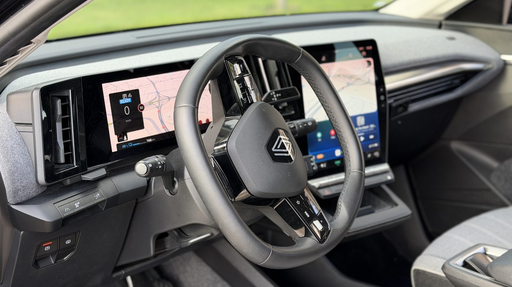

DPH si môže odpočítať len platiteľ DPH, teda firma alebo živnostník registrovaný pre DPH. Súkromná osoba ani neplatiteľ si ju neodpočíta nikdy, pre nich je DPH súčasťou ceny.
Od roku 2026 spravidla len polovica
Pri osobných autách kategórie M1 a pri motocykloch platí od 1. januára 2026 do 30. júna 2028 paušálne obmedzenie: ak sa auto používa na podnikanie aj súkromne, platiteľ si odpočíta 50 % DPH. Týka sa to kúpy, finančného leasingu aj dlhodobého prenájmu áut nadobudnutých od začiatku roka 2026.
Na pohone nezáleží. Obmedzenie platí rovnako pre elektromobil, plug-in hybrid aj naftu.
Rovnaká polovica sa uplatní aj pri nákladoch na prevádzku: palivo, elektrina, pneumatiky, servis či umývanie. Tu pravidlo platí aj pre autá kúpené pred rokom 2026.
Príklad
Auto stojí 30 000 € bez DPH. DPH 23 % je 6 900 €.
- Pri bežnom používaní na podnikanie aj súkromne si odpočítate 3 450 €.
- Zvyšných 3 450 € je náklad firmy. Nie je to daňový výdavok a nevstupuje ani do daňových odpisov.
Kedy sa dá odpočítať celá DPH
Plný odpočet zostáva v dvoch situáciách.
Auto slúži výlučne na podnikanie a vy to viete preukázať. Zákon na to vyžaduje podrobnú elektronickú evidenciu ku každému autu: VIN, evidenčné číslo, stav tachometra a pri každej jazde vodiča, čas, účel, miesto začiatku a konca a počet kilometrov. Pri autách nadobudnutých od roku 2026 treba výlučné použitie na podnikanie oznámiť aj správcovi dane. Aj občasné súkromné jazdy, napríklad cesty z domu do práce a späť, tento nárok spochybnia.
Auto patrí do výnimky. Obmedzenie sa nevzťahuje na autá, ktoré sa používajú výlučne:
- na prenájom, napríklad v požičovni,
- na platenú prepravu osôb vrátane taxislužby,
- na výcvik v autoškole,
- ako predvádzacie, testovacie alebo náhradné vozidlo,
- ako tovar na ďalší predaj.
Obmedzenie sa netýka ani úžitkových áut kategórie N1 (dodávky a niektoré verzie MPV s homologizáciou pre nákladnú dopravu). Pri nich sa odpočet riadi skutočným použitím na podnikanie ako doteraz. Kategóriu nájdete v osvedčení o evidencii.
Faktúra s DPH, alebo bez nej
Aby bolo vôbec čo odpočítať, musí byť DPH na faktúre uvedená samostatne. Pri kúpe ojazdeného auta to nie je samozrejmosť. Ak však na faktúre je, platí pre jazdené auto všetko rovnako ako pre nové.
- Faktúra s DPH: predajca je platiteľ a auto predáva v bežnom režime. Platiteľ si odpočíta 50 % alebo celú DPH podľa pravidiel vyššie.
- Osobitná úprava zdaňovania prirážky: bazár predáva auto, pri ktorého kúpe sám DPH neodpočítal. Na faktúre DPH nie je, preto nie je čo odpočítať. Pre súkromnú osobu je to často výhodnejšie, pre platiteľa nie.
- Kúpa od súkromnej osoby: žiadna DPH, žiadny odpočet.
V našej ponuke sú autá s faktúrou s DPH označené štítkom „Odpočet DPH“.
Kúpa auta zo zahraničia
Ak firma platiteľ kupuje auto od predajcu v inom štáte EÚ, predajca fakturuje bez DPH. Slovenskú DPH 23 % si firma prizná sama v daňovom priznaní a v tom istom priznaní si uplatní odpočet. Aj tu platí obmedzenie na polovicu, takže polovica DPH zostáva na zaplatenie.
Pri novom aute (do šiestich mesiacov od prvého uvedenia do prevádzky alebo do 6 000 km) sa DPH platí na Slovensku vždy. Súkromná osoba podáva osobitné daňové priznanie do siedmich dní od kúpy a bez potvrdenia daňového úradu auto neprihlási. Viac v článku Prihlásenie dovezeného auta krok za krokom.
Pozor na podvody s DPH
Pri obchode s autami sa s DPH podvádza častejšie, než by ste čakali. Najčastejšie situácie:
- Auto ponúkané „s odpočtom DPH“, ktoré ho mať nemôže. Predajca ho kúpil v osobitnom režime alebo od súkromnej osoby, no faktúru vystaví s DPH. Hrozí, že vám daňový úrad odpočet neuzná.
- Predajca, ktorý DPH vyberie, ale štátu ju neodvedie. Ak ste o tom vedeli, mali alebo mohli vedieť, ručíte za jeho daň. Zákon to predpokladá napríklad vtedy, keď je cena bez rozumného dôvodu výrazne nižšia ako na trhu, alebo keď je predajca v zozname platiteľov, u ktorých nastali dôvody na zrušenie registrácie.
Ako sa chrániť:
- overte predajcu v zozname platiteľov DPH na stránke Finančnej správy a skontrolujte, že nie je v zozname platiteľov s dôvodmi na zrušenie registrácie,
- pri podozrivo nízkej cene sa pýtajte, ako predajca auto nadobudol,
- skontrolujte, či faktúra obsahuje všetky povinné údaje vrátane IČ DPH oboch strán, základu dane, sadzby a sumy DPH,
- plaťte bankovým prevodom, nie v hotovosti.
Ku každému autu z našej ponuky vystavujeme riadnu faktúru so správne uvedeným režimom DPH. Ak chcete, vysvetlíme vám, ako sme auto nadobudli.
Predaj auta do piatich rokov
Ak si pri kúpe odpočítate len polovicu DPH a auto do piatich rokov od nadobudnutia predáte, môžete si dodatočne odpočítať pomernú časť zvyšnej DPH (§ 85n ods. 10 zákona o DPH). Výška závisí od toho, koľko rokov z piatich ešte zostáva, vrátane roka predaja.
Toto pravidlo nesúvisí s odpismi. Odpisy (dva alebo štyri roky) patria pod daň z príjmov, päťročné obdobie je pravidlo DPH.
Príklad
Firma kúpi v roku 2026 auto za 20 000 € + 4 600 € DPH a odpočíta si polovicu, teda 2 300 €.
- V roku 2027 auto predá a z celej predajnej ceny odvedie DPH.
- Dodatočne si odpočíta 2 300 € × 4/5 = 1 840 €.
- Spolu tak dostane späť 4 140 € zo 4 600 €.
Pre firmu, ktorá auto do piatich rokov predá, je teda skutočná strata na DPH menšia, než sa na prvý pohľad zdá.
Časté otázky
Platí obmedzenie odpočtu DPH aj pre elektromobily?
Áno. Obmedzenie na 50 % sa týka všetkých osobných áut kategórie M1 bez ohľadu na pohon. Elektromobily majú výhody inde, napríklad v odpisoch, v nižšom zdanení súkromného používania zamestnancom a v nulovej cestnej dani.
Platí to aj pri jazdenom aute?
Áno. Ak je na faktúre DPH uvedená samostatne, platiteľ si ju odpočíta podľa rovnakých pravidiel ako pri novom aute. Pri jazdených autách predávaných v osobitnom režime zdaňovania prirážky DPH na faktúre nie je, a preto nie je čo odpočítať.
Do kedy platí obmedzenie na 50 %?
Podľa súčasného zákona pre autá nadobudnuté od 1. januára 2026 do 30. júna 2028. O prípadnom predĺžení by muselo rozhodnúť Slovensko spolu s Európskou komisiou.
Môže si živnostník, ktorý nie je platiteľ DPH, odpočítať DPH z auta?
Nie. Odpočet DPH má len platiteľ DPH. Pre neplatiteľa je DPH súčasťou ceny auta a vstupuje do jeho nákladov cez odpisy.
Odpočítam si celú DPH, ak auto používam len na podnikanie?
Áno, ak to preukážete podrobnou elektronickou evidenciou jázd a pri aute kúpenom od roku 2026 to oznámite správcovi dane. Bez evidencie platí paušálnych 50 %.
Autá s faktúrou s DPH
Autá označené v našej ponuke štítkom „Odpočet DPH“ predávame s faktúrou, na ktorej je DPH uvedená samostatne. Ak si nie ste istí, ako to bude vo vašom prípade, pošlite nám otázku aj s tým, na čo budete auto používať.
Článok vysvetľuje všeobecné pravidlá podľa stavu k októbru 2026. Nie sme daňoví poradcovia. Pri konkrétnom rozhodnutí, najmä ak zvažujete plný odpočet, sa poraďte so svojou účtovníčkou alebo daňovým poradcom.
 Elektromobil ako služobné autoOdpisy za dva roky, polovičné zdanenie zamestnanca a nulová cestná daň.
Elektromobil ako služobné autoOdpisy za dva roky, polovičné zdanenie zamestnanca a nulová cestná daň. Leasing dovezeného autaFinančný leasing, úver alebo operatívny leasing a čo budete potrebovať.
Leasing dovezeného autaFinančný leasing, úver alebo operatívny leasing a čo budete potrebovať. Koľko naozaj stojí dovezené autoRozpis od ceny v inzeráte po auto prihlásené na Slovensku, aj s príkladmi.
Koľko naozaj stojí dovezené autoRozpis od ceny v inzeráte po auto prihlásené na Slovensku, aj s príkladmi.